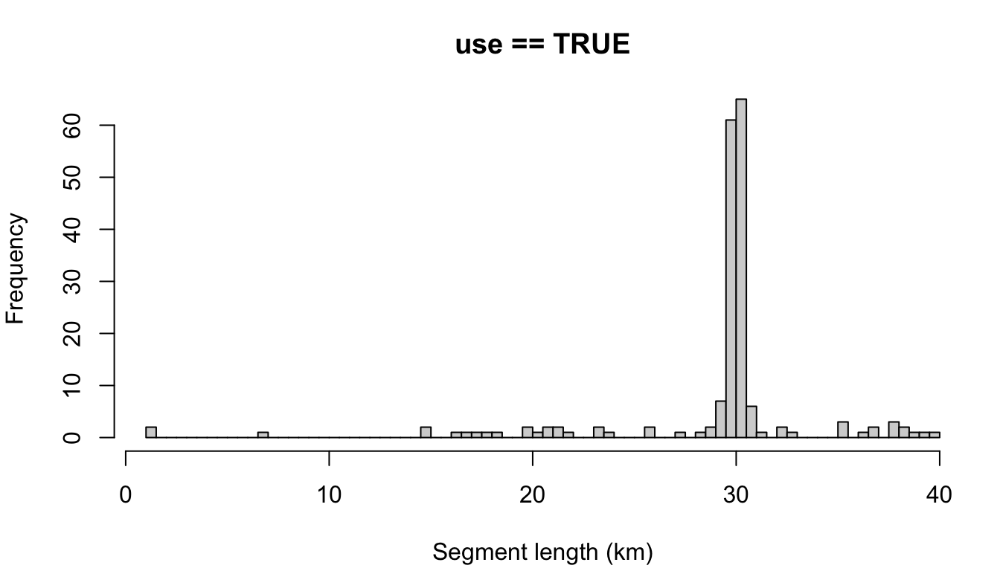
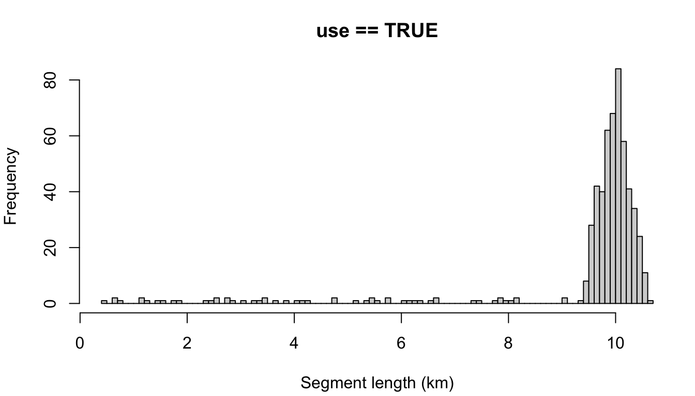

17 Segmentizing
The package’s segmentize() function and its associated settings were designed to give researchers full control over how data are segmented, be it for design-based density analysis (which tend to use long segments of 100 km or more and allow for non-contiguous effort to be included in the same segment) or for habitat modeling (which tend to use short segments of 5 - 10 km and disallow non-contiguous effort to be pooled into the same segment).
Approach
Segments are built and stored separately for each cohort of species, since each cohort has specific settings for segmentizing.
Within each cohort, the survey is first grouped into blocs of data that all share the same geographic/scientific scenario, i.e., all rows share the same Cruise number and geographic stratum. Since a survey may leave a stratum then return to it many days hence, it is normal for these blocs to contain non-contiguous data with large spatial gaps. These gaps will be addressed a few steps down.
Those blocs are split further according to whether the effort scenario meets inclusion criteria for the analysis. These inclusion criteria are controlled by the cohort-specific settings such as
distance_types,distance_modes, anddistance_on_off. Rows of data that meet the inclusion criteria are relegated to their own data bloc, and given a new column,use, with the valueTRUE. Data that do not meet the criteria are relegated to their own bloc as well (columnuseisFALSE). This means that, at the end of this process, we will have segments that will be used in the density/detection function analysis, and segments that will not. (The excluded segments are not deleted or transformed in any other way; they can still be used in summarizing detections, etc.)Next, the
segmentize()function loops through each of these blocs of effort and parses its data into segments according to thesegment_method. If segmentizing by"day", this is straightforward: all data occurring on a unique date are assigned to its own segment. Segmentizing by"equallength"(a target length for each segment) is a bit more complicated in terms of coding: segments are built up one line of data at a time; if thesegment_target_kmis reached or thesegment_max_intervalis exceeded, a new segment begins.
At the end of this process, you have lists of data sorted into their segments, each with a unique seg_id, as well as a summary dataframe that provides the distance (km); time and coordinates for the beginning, middle, and end of the segment; and the weighted averages of sighting conditions and weather data contained in the segment.
Setting up this demo
The demonstration of segmentize() on in Processing chapter relies on the settings list that is attached as a slot in the cruz object. But you can override those settings with direct function inputs in segmentize(), which gives us a chance to explore segmentization options.
First we load the demo data and carry out initial processing:
# Load built-in settings example
data(example_settings)
settings <- example_settings
# Set path to DAS file
das_file <- 'data/surveys/HICEASwinter2020.das'
# First steps of formatting
das <- das_load(das_file,
perform_checks = FALSE,
print_glimpse = FALSE)
cruz <- process_strata(das,
settings,
verbose=FALSE)
cruz <- das_format(cruz)Base example
Here is the segmentize() function parameterized with some basic settings: a target segment length of 30km, with the maximum allowable gap in effort within segments to be 6 hours.
cruz_demo <- segmentize(cruz,
segment_method = 'equallength',
segment_target_km = 30,
segment_max_interval = 6,
segment_remainder_handling = c('append','segment'),
distance_types = c('S','F','N'),
distance_modes = c('P','C'),
distance_on_off = c(TRUE),
verbose=FALSE,
to_plot = TRUE)


Contiguous vs. non-contiguous effort
The default example at the top allows for non-contiguous effort; a segment is allowed to contain effort separated by gaps as large as 24 hours (settings$segment_max_interval). To coerce segments to represent only contiguous effort, make that setting very small:
cruz_demo <- segmentize(cruz,
segment_method = 'equallength',
segment_target_km = 30,
segment_max_interval = .1,
verbose=FALSE,
to_plot = TRUE)You can see that many contiguous periods of effort were much shorter than the target length of 30 km. This is why allowing for non-contiguous effort can be advantageous for target segment lengths larger than 5 - 10 km.
Segment remainder handling
In the top example, the setting for segment_remainder_handling, c('append','segment'), means that remainders less than half the target length will be randomly appended to another segment, while remainders more than half will be treated as their own segment (and will be placed randomly along the trackline).
If you don’t want that level of complexity, you can simply assign a single setting: 'append' will append the remainder in all cases, regardless of remainder length relative to the target length. The same idea goes for 'segment'. Here is a simple comparison of those two approaches:
"append"
cruz_demo <- segmentize(cruz,
segment_method = 'equallength',
segment_target_km = 10,
segment_max_interval = 6,
segment_remainder_handling = 'append',
verbose=FALSE,
to_plot = TRUE)
"segment"
cruz_demo <- segmentize(cruz,
segment_method = 'equallength',
segment_target_km = 10,
segment_max_interval = 6,
segment_remainder_handling = 'segment',
verbose=FALSE,
to_plot = TRUE)
"disperse"
The other possible setting is 'disperse', which disperses the remainder evenly across all segments. To demonstrate, let’s use a target length of 10 km.
cruz_demo <- segmentize(cruz,
segment_method = 'equallength',
segment_target_km = 10,
segment_max_interval = 6,
segment_remainder_handling = 'disperse',
verbose=FALSE,
to_plot = TRUE)
Note that most segments are longer than the target length, due to the impact of dispersing the remainder. If you wanted, you could combat this by making the target length slightly smaller:
cruz_demo <- segmentize(cruz,
segment_method = 'equallength',
segment_target_km = 9.5,
segment_max_interval = 6,
segment_remainder_handling = 'disperse',
verbose=FALSE,
to_plot = TRUE)
But in general, the disperse option may be more appropriate for shorter segment lengths.